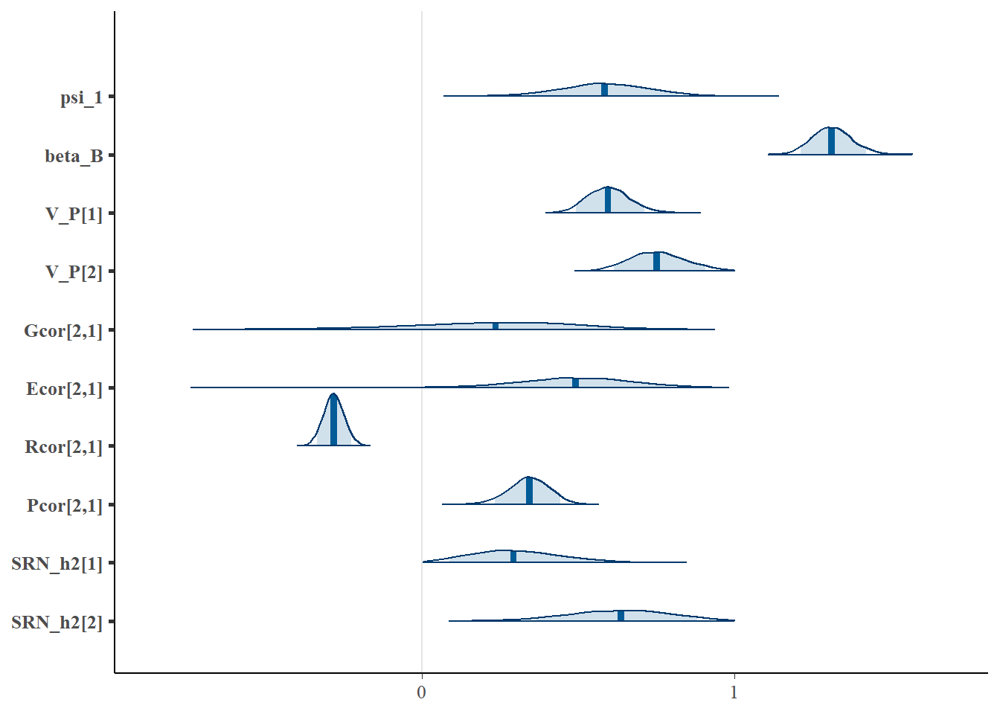

4 Within-and-between partner SAM
As discussed and demonstrated in the previous chapters (2 & 3), within partner variation allows for modelling the temporal dynamics of social interactions, including intrinsic and residual trait feedback, while between partner variation can be used to partition the effects of assortment and social plasticity. Study designs providing both within and between partner measurements will, therefore, tend to be optimally informative about phenotypic interactions and their evolutionary consequences.
The formal model for a between-and-within partner SAM combines the basic latent ARMA feedback process of the within partner SAM (Ch 2) with the within-individual centering used to remove bias from the SRN slopes of the between partner SAM (Ch 3). The model for a measurement \(i\) of aggression \(z_{ijt}\) in focal individual \(j\) during a single interaction period \(t\) is given by
\[z_{ijt} = \mu_0 + \eta_{Wijt} + \beta_{B}\eta_{Bijt} + \xi_{ijt}\]
where \(\eta_{Wijt}\) is the within-individual centered plastic response to the social partner SRN trait value
\[\eta_{Wijt} = \begin{Bmatrix} \mu_j + \left( \psi_1 + \psi_j \right) \left( \mu_k' - \bar{\mu}'_K \right) & \mathrm{if} \ t = 1 \\ \mu_j + \left( \psi_1 + \psi_j \right) \left( \eta_{ikt-1}' - \bar{\eta}'_{iKt-1} \right) & \mathrm{else} \end{Bmatrix} \]
with \(\beta_{B}\eta_{Bijt}\) reflecting the association with the average partner SRN trait value
\[\eta_{Bijt} = \begin{Bmatrix} \left( \psi_1 + \psi_j \right) \bar{\mu}'_K & \mathrm{if} \ t = 1 \\ \left( \psi_1 + \psi_j \right) \bar{\eta}'_{iKt-1} & \mathrm{else} \end{Bmatrix} \]
scaled by the between partner regression coefficient \(\beta_{B}\). In addition, \(\xi_{ijt}\) captures SRN measurement error caused by residual feedback over time
\[\xi_{ijt} = \begin{Bmatrix} \epsilon_{ijt} & \mathrm{if} \ t = 1 \\ \epsilon_{ijt} + \phi\epsilon_{ikt-1}' & \mathrm{else} \end{Bmatrix} \]
Similarly, for the social partner
\[z_{ikt}' = \mu_0 + \eta_{Wikt}' + \beta_B\eta_{Bikt}' + \xi_{ikt}'\] \[\eta_{Wikt}' = \begin{Bmatrix} \mu_k' + \left( \psi_1 + \psi_k' \right)\left( \mu_j - \bar{\mu}_J \right) & \mathrm{if} \ t = 1 \\ \mu_k' + \left( \psi_1 + \psi_k' \right)\left( \eta_{ijt} - \bar{\eta}_{iJt} \right) & \mathrm{else} \end{Bmatrix} \]
\[\eta_{Bikt}' = \begin{Bmatrix} \left( \psi_1 + \psi_k' \right) \bar{\mu}_J & \mathrm{if} \ t = 1 \\ \left( \psi_1 + \psi_k' \right) \bar{\eta}_{iJt} & \mathrm{else} \end{Bmatrix} \]
\[\xi_{ikt}' = \begin{Bmatrix} \epsilon_{ikt}' & \mathrm{if} \ t = 1 \\ \epsilon_{ikt}' + \phi\epsilon_{ijt-1} & \mathrm{else} \end{Bmatrix} \]
The random effects are assumed to be well-described by multivariate normal distributions. \[\mu_j = \mu_{\mathrm{A}j} + \mu_{\mathrm{E}j}, \quad \psi_j = \psi_{\mathrm{A}j} + \psi_{\mathrm{E}j}\] \[\mu_k' = \mu_{\mathrm{A}k}' + \mu_{\mathrm{E}j}', \quad \psi_k' = \psi_{\mathrm{A}k}' + \psi_{\mathrm{E}k}'\]
\[\begin{bmatrix} \boldsymbol{\mu_{\mathrm{A}}}, \boldsymbol{\mu'_{\mathrm{A}}},\boldsymbol{\psi_{\mathrm{A}}},\boldsymbol{\psi}'_{\mathrm{A}} \end{bmatrix}^{\mathrm{T}} \sim \mathrm{MVNormal}(\boldsymbol{0}, \boldsymbol{\mathrm{G}} \otimes \boldsymbol{\mathrm{A}} ) \] \[\begin{bmatrix} \boldsymbol{\mu_{\mathrm{E}}}, \boldsymbol{\mu'_{\mathrm{E}}},\boldsymbol{\psi_{\mathrm{E}}},\boldsymbol{\psi}'_{\mathrm{E}} \end{bmatrix}^{\mathrm{T}} \sim \mathrm{MVNormal}(\boldsymbol{0}, \boldsymbol{\mathrm{E}} \otimes \boldsymbol{\mathrm{I}} ) \] \[\begin{bmatrix} \boldsymbol{\epsilon}, \boldsymbol{\epsilon}' \end{bmatrix}^{\mathrm{T}} \sim \mathrm{MVNormal}(\boldsymbol{0}, \boldsymbol{\mathrm{\Sigma}} ) \] We also assume that the social reaction norm (SRN) intercept and slope (co)variances are equivalent for focal (\(\boldsymbol{\mu},\boldsymbol{\psi}\)) and social partners (\(\boldsymbol{\mu}',\boldsymbol{\psi}'\)). The \(\boldsymbol{G}\) matrix can therefore be reduced to a 2x2 matrix for all individuals in the population
\[\boldsymbol{\mathrm{G}}= \begin{bmatrix} \mathrm{var([\boldsymbol{\mu},\boldsymbol{\mu}'])} & \mathrm{cov([\boldsymbol{\mu},\boldsymbol{\mu}'],[\boldsymbol{\psi},\boldsymbol{\psi}'])} \\ \mathrm{cov([\boldsymbol{\psi},\boldsymbol{\psi}'],[\boldsymbol{\mu},\boldsymbol{\mu}'])} & \mathrm{var([\boldsymbol{\psi},\boldsymbol{\psi}'])} \end{bmatrix}\]
The residual matrix \(\boldsymbol{\Sigma}\) estimates the association among focal and social partners’ residuals.
\[\boldsymbol{\Sigma}= \begin{bmatrix} \mathrm{var(\boldsymbol{\epsilon})} & \mathrm{cov}(\boldsymbol{\epsilon},\boldsymbol{\epsilon}') \\ \mathrm{cov}(\boldsymbol{\epsilon}',\boldsymbol{\epsilon}) & \mathrm{var(\boldsymbol{\epsilon'})} \end{bmatrix}\] This model is, therefore, appropriate for situations where the distinction between focal and partner is semi-arbitrary, e.g. when measuring within-sex interactions or when males and females exhibit similar patterns of phenotypic variation. In this case, we make the latter assumption for simplicity. To account for differences between the responses of focal individuals and social partners, the model can simply be extended with additional parameters, e.g. specifying separate \(G_M\) and \(G_F\) matrices for males and female respective genetic (co)variances and so on.
4.1 Simulate data
We can simulate data from this model using the custom pedfun() function introduced in Ch. 1.5, as well by integrating the basic simulation approach outlined in the previous SAM chapters for repeated interactions with partners (Ch. 2) as well as across partners (Ch. 3).
We assume that interactions occur with 4 lifetime partners with two measurements per individual within each dyad. This empirical information allows us to more effectively partition within and between dyad variation.
library(mvtnorm)
#common settings
I_partner = 4 #partners/individual
I_obs = 2 #observations/individual/seasonal partner
I_sample = I_partner*I_obs #samples/individual
#population properties
I=300 #total individuals for simulation
popmin=400
popmax=600
ngenerations = 10
nids<-sample(popmin:popmax, ngenerations, replace=TRUE) #N / generation
epm = sample(seq(0.15, 0.25,by=0.05),1) #extra-pair mating
nonb = sample(seq(0.4,0.6,by=0.05),1) #proportion of non-breeding / generation
#relatedness matrix
A_mat <- pedfun(popmin=popmin, popmax=popmax, ngenerations=ngenerations,
epm=epm, nonb=nonb, nids=nids, I=I, missing=FALSE)
#####################################################################
#Parameter values
#####################################################################
alpha_0 = 0 #global intercept
psi_1 = 0.5 #population interaction coefficient
phi = 0.5 #residual feedback coefficient (epsilon_j ~ epsilon_t-1k)
SD_intercept = 0.3 #standard deviation of SRN intercepts
SD_slope = 0.3 #SD of SRN slopes
r_alpha = 0.3 #assortment coefficient (expressed as correlation)
r_G = 0.3 #genetic correlation of random intercepts and slopes
r_E = 0.3 #environmental correlation
r_R = -0.3 #residual effect correlation (epsilon_tj = epsilon_tk)
V_G = 0.3 #genetic variance of REs
V_E = 0.3 #genetic variance of REs
res_V = 1
#Random effect correlations
G_cor <- matrix(c(1,r_G,r_G,1), nrow=2, ncol=2) #mu_A, beta_A
G_sd <- c(sqrt(V_G),sqrt(V_G)) #G effect sds
G_cov <- diag(G_sd) %*% G_cor %*% diag(G_sd)
E_cor <- matrix(c(1,r_E,r_E,1), nrow=2, ncol=2) #mu_E, beta_E
E_sd <- c(sqrt(V_E),sqrt(V_E)) #E effect sds
E_cov <- diag(E_sd) %*% E_cor %*% diag(E_sd)
#matrices
G_block <- G_cov %x% A_mat
E_block <- E_cov %x% diag(1,I)
#generate correlated REs
Gvalues <- rmvnorm(1, mean=rep(0,I*2), sigma=G_block)
G_val = data.frame(matrix(Gvalues, nrow=I, ncol=2))
cor(G_val)## X1 X2
## X1 1.0000000 0.3003963
## X2 0.3003963 1.0000000Evalues <- rmvnorm(1, mean=rep(0,I*2), sigma=E_block)
E_val = data.frame(matrix(Evalues, nrow=I, ncol=2))
cor(E_val)## X1 X2
## X1 1.0000000 0.3394947
## X2 0.3394947 1.0000000#combine temporary object for all SRN parameters
#use shorthand mu = 0, psi = 1
P = cbind(G_val,E_val)
colnames(P) = c("A0", "A1", "E0", "E1")
#individual phenotypic REs
#use shorthand mu = 0, psi = 1
P$P0 = P$A0 + P$E0
P$P1 = P$A1 + P$E1
#add ID
P$ID = seq(1:I)The structure of dyads is sampled to match the expected SRN intercept correlation among individuals and their social partners. For this simulation, we assume that partners assort on their SRN slopes rather than intercepts. This is of course arbitrary but allows us to directly assess how well the model can partition within- and between-individual sources of partner covariation. After determining the dyads and organizing their trait values, the data frame is then expanded to account for multiple observations with the same social partner.
library(dplyr)
library(MASS)
pairs = list()
for (j in 1:I_partner){
#male additive genetic RN slopes (x I_partner for multiple lifetime partners)
sort.m <- data.frame(P1_m = P$P1[1:(I/2)], ID_m = (1:(I/2)) )
sort.m<-sort.m[order(sort.m[,"P1_m"]),]
#female phenotypic RN slopes
sort.f <- data.frame(P1_f = P$P1[(I/2 + 1):I], ID_f = ((I/2+1):I) )
sort.f<-sort.f[order(sort.f[,"P1_f"]),]
#generate random dataset with desired rank-order correlation
temp_mat <- matrix(r_alpha, ncol = 2, nrow = 2) #cor of male and female values
diag(temp_mat) <- 1 #cor matrix
#sim values
temp_data1<-MASS::mvrnorm(n = I/2, mu = c(0, 0), Sigma = temp_mat, empirical=TRUE)
#ranks of random data
rm <- rank(temp_data1[ , 1], ties.method = "first")
rf <- rank(temp_data1[ , 2], ties.method = "first")
#induce cor through rank-ordering of RN vectors
cor(sort.m$P1_m[rm], sort.f$P1_f[rf])
#sort partner ids into dataframe
partner.id = data.frame(ID_m = sort.m$ID_m[rm], ID_f = sort.f$ID_f[rf])
partner.id = partner.id[order(partner.id[,"ID_m"]),]
#add to list
pairs[[j]] = partner.id
}
partner.id = bind_rows(pairs)
partner.id[order(partner.id$ID_m),]## ID_m ID_f
## 1 1 220
## 151 1 285
## 301 1 280
## 451 1 215
## 2 2 179
## 152 2 281
## 302 2 182
## 452 2 165
## 3 3 152
## 153 3 164
## 303 3 230
## 453 3 274
## 4 4 198
## 154 4 212
## 304 4 165
## 454 4 249
## 5 5 231
## 155 5 196
## 305 5 238
## 455 5 291
## 6 6 270
## 156 6 297
## 306 6 154
## 456 6 192
## 7 7 265
## 157 7 256
## 307 7 269
## 457 7 273
## 8 8 251
## 158 8 163
## 308 8 195
## 458 8 250
## 9 9 167
## 159 9 188
## 309 9 222
## 459 9 241
## 10 10 300
## 160 10 264
## 310 10 265
## 460 10 168
## 11 11 254
## 161 11 205
## 311 11 168
## 461 11 272
## 12 12 267
## 162 12 189
## 312 12 232
## 462 12 271
## 13 13 258
## 163 13 243
## 313 13 194
## 463 13 197
## 14 14 226
## 164 14 193
## 314 14 293
## 464 14 200
## 15 15 273
## 165 15 236
## 315 15 258
## 465 15 187
## 16 16 203
## 166 16 180
## 316 16 196
## 466 16 265
## 17 17 227
## 167 17 162
## 317 17 276
## 467 17 240
## 18 18 280
## 168 18 253
## 318 18 208
## 468 18 193
## 19 19 284
## 169 19 204
## 319 19 216
## 469 19 214
## 20 20 228
## 170 20 192
## 320 20 278
## 470 20 184
## 21 21 233
## 171 21 287
## 321 21 209
## 471 21 199
## 22 22 292
## 172 22 223
## 322 22 191
## 472 22 170
## 23 23 283
## 173 23 217
## 323 23 274
## 473 23 248
## 24 24 271
## 174 24 276
## 324 24 184
## 474 24 201
## 25 25 277
## 175 25 280
## 325 25 251
## 475 25 233
## 26 26 214
## 176 26 181
## 326 26 158
## 476 26 267
## 27 27 287
## 177 27 270
## 327 27 153
## 477 27 210
## 28 28 163
## 178 28 245
## 328 28 256
## 478 28 224
## 29 29 185
## 179 29 201
## 329 29 248
## 479 29 208
## 30 30 221
## 180 30 262
## 330 30 229
## 480 30 180
## 31 31 219
## 181 31 184
## 331 31 246
## 481 31 247
## 32 32 200
## 182 32 246
## 332 32 268
## 482 32 152
## 33 33 243
## 183 33 214
## 333 33 239
## 483 33 295
## 34 34 246
## 184 34 177
## 334 34 205
## 484 34 289
## 35 35 256
## 185 35 296
## 335 35 202
## 485 35 167
## 36 36 188
## 186 36 238
## 336 36 177
## 486 36 194
## 37 37 223
## 187 37 293
## 337 37 295
## 487 37 154
## 38 38 162
## 188 38 154
## 338 38 211
## 488 38 260
## 39 39 186
## 189 39 186
## 339 39 291
## 489 39 296
## 40 40 229
## 190 40 179
## 340 40 299
## 490 40 190
## 41 41 266
## 191 41 295
## 341 41 180
## 491 41 268
## 42 42 201
## 192 42 161
## 342 42 292
## 492 42 157
## 43 43 218
## 193 43 241
## 343 43 171
## 493 43 221
## 44 44 295
## 194 44 237
## 344 44 215
## 494 44 195
## 45 45 232
## 195 45 151
## 345 45 201
## 495 45 204
## 46 46 257
## 196 46 249
## 346 46 281
## 496 46 236
## 47 47 171
## 197 47 231
## 347 47 218
## 497 47 172
## 48 48 285
## 198 48 203
## 348 48 188
## 498 48 169
## 49 49 168
## 199 49 247
## 349 49 159
## 499 49 163
## 50 50 176
## 200 50 224
## 350 50 152
## 500 50 287
## 51 51 215
## 201 51 242
## 351 51 264
## 501 51 234
## 52 52 225
## 202 52 267
## 352 52 212
## 502 52 198
## 53 53 154
## 203 53 213
## 353 53 203
## 503 53 292
## 54 54 260
## 204 54 250
## 354 54 253
## 504 54 262
## 55 55 235
## 205 55 197
## 355 55 284
## 505 55 225
## 56 56 196
## 206 56 173
## 356 56 176
## 506 56 245
## 57 57 240
## 207 57 278
## 357 57 226
## 507 57 160
## 58 58 255
## 208 58 288
## 358 58 273
## 508 58 253
## 59 59 151
## 209 59 248
## 359 59 279
## 509 59 239
## 60 60 279
## 210 60 220
## 360 60 163
## 510 60 171
## 61 61 269
## 211 61 251
## 361 61 161
## 511 61 283
## 62 62 262
## 212 62 263
## 362 62 285
## 512 62 183
## 63 63 252
## 213 63 239
## 363 63 186
## 513 63 174
## 64 64 297
## 214 64 244
## 364 64 167
## 514 64 222
## 65 65 204
## 215 65 282
## 365 65 242
## 515 65 202
## 66 66 182
## 216 66 272
## 366 66 252
## 516 66 188
## 67 67 184
## 217 67 229
## 367 67 164
## 517 67 213
## 68 68 197
## 218 68 208
## 368 68 200
## 518 68 166
## 69 69 166
## 219 69 286
## 369 69 236
## 519 69 277
## 70 70 286
## 220 70 294
## 370 70 287
## 520 70 246
## 71 71 164
## 221 71 230
## 371 71 206
## 521 71 217
## 72 72 155
## 222 72 153
## 372 72 254
## 522 72 151
## 73 73 157
## 223 73 259
## 373 73 297
## 523 73 191
## 74 74 192
## 224 74 165
## 374 74 272
## 524 74 235
## 75 75 153
## 225 75 207
## 375 75 190
## 525 75 294
## 76 76 222
## 226 76 275
## 376 76 179
## 526 76 182
## 77 77 205
## 227 77 299
## 377 77 277
## 527 77 270
## 78 78 290
## 228 78 255
## 378 78 266
## 528 78 196
## 79 79 178
## 229 79 254
## 379 79 169
## 529 79 158
## 80 80 244
## 230 80 209
## 380 80 290
## 530 80 237
## 81 81 238
## 231 81 174
## 381 81 189
## 531 81 299
## 82 82 190
## 232 82 195
## 382 82 227
## 532 82 276
## 83 83 156
## 233 83 210
## 383 83 183
## 533 83 282
## 84 84 263
## 234 84 157
## 384 84 244
## 534 84 161
## 85 85 216
## 235 85 182
## 385 85 289
## 535 85 178
## 86 86 165
## 236 86 194
## 386 86 192
## 536 86 173
## 87 87 242
## 237 87 269
## 387 87 162
## 537 87 298
## 88 88 234
## 238 88 211
## 388 88 262
## 538 88 266
## 89 89 206
## 239 89 199
## 389 89 249
## 539 89 275
## 90 90 264
## 240 90 290
## 390 90 275
## 540 90 203
## 91 91 272
## 241 91 232
## 391 91 187
## 541 91 205
## 92 92 180
## 242 92 258
## 392 92 257
## 542 92 261
## 93 93 282
## 243 93 279
## 393 93 255
## 543 93 257
## 94 94 291
## 244 94 187
## 394 94 225
## 544 94 216
## 95 95 195
## 245 95 265
## 395 95 223
## 545 95 212
## 96 96 261
## 246 96 292
## 396 96 217
## 546 96 259
## 97 97 187
## 247 97 234
## 397 97 288
## 547 97 162
## 98 98 169
## 248 98 202
## 398 98 219
## 548 98 300
## 99 99 241
## 249 99 178
## 399 99 231
## 549 99 219
## 100 100 230
## 250 100 222
## 400 100 175
## 550 100 256
## 101 101 211
## 251 101 226
## 401 101 178
## 551 101 175
## 102 102 158
## 252 102 268
## 402 102 198
## 552 102 254
## 103 103 177
## 253 103 235
## 403 103 210
## 553 103 263
## 104 104 181
## 254 104 216
## 404 104 250
## 554 104 229
## 105 105 217
## 255 105 277
## 405 105 263
## 555 105 251
## 106 106 288
## 256 106 152
## 406 106 243
## 556 106 279
## 107 107 213
## 257 107 215
## 407 107 160
## 557 107 185
## 108 108 294
## 258 108 198
## 408 108 166
## 558 108 232
## 109 109 193
## 259 109 191
## 409 109 259
## 559 109 258
## 110 110 202
## 260 110 257
## 410 110 270
## 560 110 207
## 111 111 259
## 261 111 169
## 411 111 240
## 561 111 255
## 112 112 173
## 262 112 266
## 412 112 228
## 562 112 179
## 113 113 208
## 263 113 261
## 413 113 247
## 563 113 293
## 114 114 207
## 264 114 233
## 414 114 286
## 564 114 156
## 115 115 170
## 265 115 190
## 415 115 245
## 565 115 238
## 116 116 275
## 266 116 155
## 416 116 261
## 566 116 227
## 117 117 250
## 267 117 271
## 417 117 221
## 567 117 177
## 118 118 239
## 268 118 200
## 418 118 185
## 568 118 297
## 119 119 183
## 269 119 185
## 419 119 204
## 569 119 220
## 120 120 189
## 270 120 175
## 420 120 234
## 570 120 181
## 121 121 160
## 271 121 160
## 421 121 237
## 571 121 231
## 122 122 247
## 272 122 159
## 422 122 170
## 572 122 176
## 123 123 209
## 273 123 227
## 423 123 207
## 573 123 285
## 124 124 174
## 274 124 167
## 424 124 197
## 574 124 230
## 125 125 159
## 275 125 283
## 425 125 214
## 575 125 223
## [ reached 'max' / getOption("max.print") -- omitted 100 rows ] #put all dyads together
partner.id$dyadn = seq(1:nrow(partner.id))
#add values back to dataframe (male and joint)
partner.id$P0m <- P$P0[match(partner.id$ID_m,P$ID)]
partner.id$P0f <- P$P0[match(partner.id$ID_f,P$ID)]
partner.id$P1m <- P$P1[match(partner.id$ID_m,P$ID)]
partner.id$P1f <- P$P1[match(partner.id$ID_f,P$ID)]
partner.id$A0m <- P$A0[match(partner.id$ID_m,P$ID)]
partner.id$A0f <- P$A0[match(partner.id$ID_f,P$ID)]
partner.id$A1m <- P$A1[match(partner.id$ID_m,P$ID)]
partner.id$A1f <- P$A1[match(partner.id$ID_f,P$ID)]
partner.id$E0m <- P$E0[match(partner.id$ID_m,P$ID)]
partner.id$E0f <- P$E0[match(partner.id$ID_f,P$ID)]
partner.id$E1m <- P$E1[match(partner.id$ID_m,P$ID)]
partner.id$E1f <- P$E1[match(partner.id$ID_f,P$ID)]
#calculate mean partner phenotype for each subject
#average female for male partners
mean_0m <- aggregate(P0f ~ ID_m, mean, data = partner.id)
names(mean_0m)[2] <- "meanP0m"
mean_1m <- aggregate(P1f ~ ID_m, mean, data = partner.id)
names(mean_1m)[2] <- "meanP1m"
partner.id$meanP0m <- mean_0m$meanP0m[match(partner.id$ID_m,mean_0m$ID_m)]
partner.id$meanP1m <- mean_1m$meanP1m[match(partner.id$ID_m,mean_1m$ID_m)]
#average male for female partners
mean_0f <- aggregate(P0m ~ ID_f, mean, data = partner.id)
names(mean_0f)[2] <- "meanP0f"
mean_1f <- aggregate(P1m ~ ID_f, mean, data = partner.id)
names(mean_1f)[2] <- "meanP1f"
partner.id$meanP0f <- mean_0f$meanP0f[match(partner.id$ID_f,mean_0f$ID_f)]
partner.id$meanP1f <- mean_1f$meanP1f[match(partner.id$ID_f,mean_1f$ID_f)]
#number of dyads
ndyad = nrow(partner.id)
#expand for repeated measures
partner.id$rep <- I_obs
pair_df <- partner.id[rep(row.names(partner.id), partner.id$rep),]
#correlations
cor(partner.id$P0m, partner.id$P0f)## [1] 0.05302799 cor(partner.id$P1m, partner.id$P0f)## [1] -0.01685785 cor(partner.id$P0m, partner.id$P1f)## [1] 0.11546 cor(partner.id$P1m, partner.id$P1f)## [1] 0.3003677The responses can now be sampled. Rather than directly within-individual centering responses and specifying the between-partner regression coefficient \(\beta_{B}\) in the simulation, we assume partners respond to the total SRN trait value of their partner. Therefore, we expect \(\beta_{B}=1\).
#####################################################################
#Additional effects
#####################################################################
#correlated residuals between male and females
R_cor <- matrix(c(1,r_R,r_R,1), nrow=2, ncol=2)
res_sd <- sqrt(res_V)
R_cov <- diag(c(res_sd,res_sd)) %*% R_cor %*% diag(c(res_sd,res_sd))
res_ind<-data.frame(rmvnorm(nrow(pair_df), c(0,0), R_cov))
pair_df$resAGm = res_ind$X1
pair_df$resAGf = res_ind$X2
#####################################################################
#Simulate responses over t = {1,2} per partner
#####################################################################
#add interaction number
pair_df$turn = rep(c(1,2),ndyad)
#average male social environment at time = 1
pair_df[pair_df$turn==1,"meaneta_m"] = pair_df[pair_df$turn==1,"meanP0m"] +
(psi_1 + pair_df[pair_df$turn==1,"meanP1m"])*(pair_df[pair_df$turn==1,"P0m"])
#average female social environment at time = 1
pair_df[pair_df$turn==1,"meaneta_f"] = pair_df[pair_df$turn==1,"meanP0f"] +
(psi_1 + pair_df[pair_df$turn==1,"meanP1f"])*(pair_df[pair_df$turn==1,"P0f"])
#individual prediction at t = 1
#males
#eta_j{t=1} = mu_j + psi_j*(mu_k - mu_meanK)
pair_df[pair_df$turn==1,"eta_m"] = pair_df[pair_df$turn==1,"P0m"] +
(psi_1 + pair_df[pair_df$turn==1,"P1m"])*(pair_df[pair_df$turn==1,"P0f"])
#females
#eta_k{t=1} = mu_k + psi_k*(mu_j - mu_meanJ)
pair_df[pair_df$turn==1,"eta_f"] = pair_df[pair_df$turn==1,"P0f"] +
(psi_1 + pair_df[pair_df$turn==1,"P1f"])*(pair_df[pair_df$turn==1,"P0m"])
#individual prediction at t = 2
#eta_j{t=2} = mu_j + psi_j*(eta_k{t=1} - eta_meanK{t=1})
pair_df[pair_df$turn==2,"eta_m"] = pair_df[pair_df$turn==2,"P0m"] +
(psi_1 + pair_df[pair_df$turn==2,"P1m"])*(pair_df[pair_df$turn==1,"eta_f"])
#females
pair_df[pair_df$turn==2,"eta_f"] = pair_df[pair_df$turn==2,"P0f"] +
(psi_1 + pair_df[pair_df$turn==2,"P1f"])*(pair_df[pair_df$turn==1,"eta_m"])
#add intercept and residual
pair_df$AG_m = alpha_0 + pair_df$eta_m + pair_df$resAGm
pair_df$AG_f = alpha_0 + pair_df$eta_f + pair_df$resAGf
#add residual feedback
pair_df[pair_df$turn==2,"AG_m"] = pair_df[pair_df$turn==2,"AG_m"] + phi * pair_df[pair_df$turn==1,"resAGf"]
pair_df[pair_df$turn==2,"AG_f"] = pair_df[pair_df$turn==2,"AG_f"] + phi * pair_df[pair_df$turn==1,"resAGm"]This data frame is combined with indices of male and female IDs in a list for Stan.
#####################################################################
#Prepare data for Stan
#####################################################################
#individual indices
Im = I/2 #number of males
If = I/2 #number of females
N_sex = (I/2)*2*4 #total observations per sex
idm<-pair_df$ID_m #male ID
idf<-pair_df$ID_f #female ID
idf<-idf - (Im) #index within female vector
#partner IDs for male individuals
partners_m<-data.frame(idfocal = rep(1:(I/2)), #all partners ID
partner1 = NA, partner2 = NA, partner3 = NA, partner4 = NA)
for(i in 1:(I/2)){partners_m[i,c(2:5)] <-partner.id[partner.id$ID_m==i,"ID_f"]}
#partner IDs for female individuals
partners_f<-data.frame(idfocal = rep((I/2+1):I), #all partners ID
partner1 = NA, partner2 = NA, partner3 = NA, partner4 = NA)
for(i in (I/2+1):I){partners_f[i-(I/2),c(2:5)] <-partner.id[partner.id$ID_f==i,"ID_m"]}
######################
#data prep for Stan
stan_data <-
list(N_sex = N_sex, I = I, Im=Im, If = If, idm = idm, idf = idf,
partners_m = partners_m, partners_f = partners_f,
AG_m = pair_df$AG_m, AG_f = pair_df$AG_f, time = pair_df$turn, A = A_mat)4.2 Estimate the model
The within and between partner model code extends the within individual centered, between partner model to account for longitudinal feedback effects within dyads. These changes are accomplished in the parameters as well as the model program blocks. In the latter, a conditional statement is added to account for the effects on \(\eta_{ijt}\) and \(\eta'_{ikt}\) at \(t=1\) and \(t>1\), and similarly for the residual feedback effects \(\xi_j\) and \(\xi'_k\).
write("
data {
//indices and scalars used for model specification
int<lower=1> N_sex; //total aggression observations per sex (I/2 * 4 lifetime partners)
int<lower=0> I; //total individuals (M + F)
int<lower=0> Im; //number of males
int<lower=0> If; //number of females
int<lower=1> idm[N_sex]; //index of male AG observations (of length N_sex)
int<lower=1> idf[N_sex]; //index of female AG observations
int<lower=1> partners_m [Im,5]; //index of male partner IDs, first column is focal ID (1 + 4 IDs)
int<lower=1> partners_f [If,5]; //index of female partner IDs, first column is focal ID (1 + 4 IDs)
//empirical data
matrix[I,I] A; //relatedness matrix
real AG_m[N_sex]; //male aggression measurements
real AG_f[N_sex]; //female aggression measurements
real time[N_sex]; //time index (=1 for all measures)
}
transformed data{
matrix[I,I] LA = cholesky_decompose(A); //lower-triangle A matrix
}
parameters {
//population effects
real alpha_0; //aggression global intercept
real psi_1; //expected interaction coefficient
real beta_B; //between partner effect
real<lower=-1,upper=1> phi; //(-1,1) ensures unique solution
//random effects (standard deviations)
vector<lower=0, upper = 1>[2] sd_P; //phenotypic SRN mu & psi SDs
vector<lower=0, upper = 1>[2] sd_R; //male & female residual SDs
cholesky_factor_corr[2] LG; //genetic SRN correlations
cholesky_factor_corr[2] LE; //permanent environmental SRN correlations
cholesky_factor_corr[2] LR; //sex-specific residual correlations
matrix[I,2] std_devG; //individual-level unscaled G SRN deviations
matrix[I,2] std_devE; //individual-level unscaled E SRN deviations
//SRN heritability parmameters, i.e. Var(G_RN) / Var(P_RN)
//see supplementary appendix SI for further explanation of this parameter
vector<lower=0,upper=1>[2] SRN_h2;
}
transformed parameters {
vector<lower=0>[2] sd_G; //SDs of G effects (derived from sd_P)
vector<lower=0>[2] sd_E; //SDs of E effects (derived from sd_P)
matrix[I,2] SRN_P; //scaled P SRN parameter deviations
matrix[I,2] SRN_G; //scaled G SRN parameter deviations
matrix[I,2] SRN_E; //scaled E SRN parameter deviations
matrix[If, 2] partner_meanm; //average SRN parameters of males' partners
matrix[Im, 2] partner_meanf; //average SRN parameters of females' partners
//standard deviations of genetic effects
//simplified from sqrt ( total RN phenotype variance * h2 )
sd_G[1] = sd_P[1] * sqrt(SRN_h2[1]); //genetic SD for RN intercepts
sd_G[2] = sd_P[2] * sqrt(SRN_h2[2]); //genetic SD for RN slopes
//standard deviations of environmental effects (total phenotype SD * proportion environment SD)
sd_E[1] = sd_P[1] * sqrt(1 - SRN_h2[1]); //environment SD for RN intercepts
sd_E[2] = sd_P[2] * sqrt(1 - SRN_h2[2]); //environment SD for RN slopes
//matrix normal parameterization of Kronecker product between G and A
SRN_G = LA * std_devG * diag_pre_multiply(sd_G, LG)' ;
//non-centered parameterization of permanent environmental effects
SRN_E = std_devE * diag_pre_multiply(sd_E, LE)';
//phenotypic RN effects (P = G + E); here G = additive genetic effects
SRN_P = SRN_G + SRN_E;
//calculate the mean SRN parameters of each male's lifetime partners
for(i in 1:Im) partner_meanm[i] = [mean(col(SRN_P[partners_m[i,2:5]],1)),
mean(col(SRN_P[partners_m[i,2:5]],2))];
//calculate the mean SRN parameters of each female's lifetime partners
for(i in 1:If) partner_meanf[i] = [mean(col(SRN_P[partners_f[i,2:5]],1)),
mean(col(SRN_P[partners_f[i,2:5]],2))];
}
model{
//separate male and female vectors for efficiency
matrix[Im,2] SRN_Pm = SRN_P[1:Im]; //male SRN phenotypic deviations
matrix[If,2] SRN_Pf = SRN_P[(Im+1):I]; //female SRN phenotypic deviations
//separate SRN intercepts and slopes (phenotypic deviations)
vector[Im] mu_m = col(SRN_Pm,1); //SRN intercepts
vector[If] mu_f = col(SRN_Pf,1);
vector[Im] psi_m = col(SRN_Pm,2); //SRN slopes
vector[If] psi_f = col(SRN_Pf,2);
//separate mean partner SRN intercepts and slopes (deviations)
vector[Im] mu_meanm = col(partner_meanm,1); //mean partner SRN intercept for males
vector[If] mu_meanf = col(partner_meanf,1); //...for females
vector[Im] psi_meanm = col(partner_meanm,2); //mean partner SRN slope for males
vector[If] psi_meanf = col(partner_meanf,2); //...for females
//initialize vectors for constructing individual-centered linear predictors
vector[N_sex] eta_Wm; //within-individual centered male SRN trait value
vector[N_sex] eta_Wf; //within-individual centered female SRN trait value
vector[N_sex] eta_Bm; //individual male SRN trait value toward average partner
vector[N_sex] eta_Bf; //individual female SRN trait toward average partner
vector[N_sex] eta_meanm; //average SRN partner values for males
vector[N_sex] eta_meanf; //average SRN partner values for females
vector[N_sex] linpred_m; //expected value for male responses
vector[N_sex] linpred_f; //expected value for female responses
vector[N_sex] epsilon_m; //residuals for male responses
vector[N_sex] epsilon_f; //residuals for male responses
//Male and female aggression response model
for (n in 1:N_sex) {
//SRN trait values
//assumes that n = 1 in the context of an ongoing social interaction
//if n = 1 prior to social context, then specify eta[t=1] = mu_j instead
if (time[n]==1)
{
//within-individual centered eta
//male eta[t=1] = mu_j + psi_j*(mu_k - mu_meanK)
eta_Wm[n] = mu_m[idm[n]] + (psi_1 + psi_m[idm[n]])*(mu_f[idf[n]] - mu_meanm[idm[n]]) ;
//female eta[t=1] = mu_k + psi_k*(mu_j - mu_meanJ)
eta_Wf[n] = mu_f[idf[n]] + (psi_1 + psi_f[idf[n]])*(mu_m[idm[n]] - mu_meanf[idf[n]]);
//average individual eta
//male eta[t=1] = mu_j + psi_j*mu_k
eta_Bm[n] = (psi_1 + psi_m[idm[n]])*mu_meanm[idm[n]];
//female eta[t=1] = mu_k + psi_k*mu_j
eta_Bf[n] = (psi_1 + psi_f[idf[n]])*mu_meanf[idf[n]];
//average partner eta[t=1]
//average eta males' partners [t=1] = mu_meanK + psi_meanK*mu_j
eta_meanm[n] = mu_meanm[idm[n]] + (psi_1 + psi_meanm[idm[n]])*mu_m[idm[n]];
//average eta females' partners [t=1] = mu_meanJ + psi_meanJ*mu_k
eta_meanf[n] = mu_meanf[idf[n]] + (psi_1 + psi_meanf[idf[n]])*mu_f[idf[n]];
}
else
{
//within-individual centered eta
//male eta[t=2] = mu_j + psi_j*(eta_k[t=1] - eta_meanK[t=1])
eta_Wm[n] = mu_m[idm[n]] + (psi_1 + psi_m[idm[n]])*(eta_Wf[n-1] - eta_meanm[n-1]);
//female eta[t=2] = mu_k + psi_k*(eta_j[t=1] - eta_meanJ[t=1])
eta_Wf[n] = mu_f[idf[n]] + (psi_1 + psi_f[idf[n]])*(eta_Wm[n-1] - eta_meanf[n-1]);
//average individual eta
//male average eta[t=2] = mu_j + psi_j*eta_meanK[t=1]
eta_Bm[n] = (psi_1 + psi_m[idm[n]])*eta_meanm[n-1];
//female average eta[t=2] = mu_k + psi_k*eta_meanJ[t=1]
eta_Bf[n] = (psi_1 + psi_f[idf[n]])*eta_meanf[n-1];
//average eta males' partners [t=1] = mu_meanK + psi_meanK*mean eta_j[t-1]
eta_meanm[n] = mu_meanm[idm[n]] + (psi_1 + psi_meanm[idm[n]])*(mu_m[idm[n]] + eta_Bm[n-1]);
//female average partner eta
eta_meanf[n] = mu_meanf[idf[n]] + (psi_1 + psi_meanf[idf[n]])*(mu_f[idf[n]] + eta_Bf[n-1]);
}
//add global intercept and between-individual parameters to linear predictor
//other fixed effects can also be added here
linpred_m[n] = alpha_0 + eta_Wm[n] + beta_B*eta_Bm[n]; //+beta_B*eta_Bm[n]
linpred_f[n] = alpha_0 + eta_Wf[n] + beta_B*eta_Bf[n]; //+beta_B*eta_Bf[n]
//residual trait values
if(time[n]==1)
{
epsilon_m [n] = AG_m[n] - linpred_m[n];
epsilon_f [n] = AG_f[n] - linpred_f[n];
}
else
{
linpred_m[n] = linpred_m[n] + phi * epsilon_f[n-1];
epsilon_m[n] = AG_m[n] - linpred_m[n];
linpred_f[n] = linpred_f[n] + phi * epsilon_m[n-1];
epsilon_f[n] = AG_f[n] - linpred_f[n];
}
//correlated residuals between partners
[epsilon_m[n],epsilon_f[n]]' ~ multi_normal_cholesky([0,0], diag_pre_multiply(sd_R, LR));
}
//model priors
//fixed effects
alpha_0 ~ std_normal();
psi_1 ~ std_normal();
beta_B ~ std_normal();
phi ~ std_normal();
//random effects
to_vector(sd_P) ~ cauchy(0,1);
to_vector(sd_R) ~ cauchy(0,1);
LG ~ lkj_corr_cholesky(2);
LE ~ lkj_corr_cholesky(2);
LR ~ lkj_corr_cholesky(2);
to_vector(std_devG) ~ std_normal();
to_vector(std_devE) ~ std_normal();
//reaction norm heritability
to_vector(SRN_h2) ~ beta(1.2,1.2);
}
generated quantities{
//cor and cov matrices of SRN parameters and residuals
matrix[2,2] Gcor = LG * LG'; //G SRN correlation matric
matrix[2,2] Ecor = LE * LE'; //E SRN correlation matric
matrix[2,2] Rcor = LR * LR'; //residual correlation matrix
matrix[2,2] Rcov = diag_matrix(sd_R)*Rcor*diag_matrix(sd_R); //residual covariance
matrix[2,2] Gcov = diag_matrix(sd_G)*Gcor*diag_matrix(sd_G); //G SRN covariance
matrix[2,2] Ecov = diag_matrix(sd_E)*Ecor*diag_matrix(sd_E); //E SRN covariance
matrix[2,2] Pcov = Gcov + Ecov; //P SRN covariance
matrix[2,2] Pcor = inverse(diag_matrix(sd_P))*Pcov*inverse(diag_matrix(sd_P)); //P SRN correlation
//variances
vector<lower=0>[2] V_P = sd_P .* sd_P;
vector<lower=0>[2] V_G = sd_G .* sd_G;
vector<lower=0>[2] V_E = sd_E .* sd_E;
vector<lower=0>[2] V_R = sd_R .* sd_R;
}", "sam3_3w.stan")Depending on the sample size set during the simulation, this model will likely take 30+ min to finish sampling. The total number of iterations can be reduced to save time, but is set to a large value here to ensure sufficient effective sample sizes for some parameters.
library(rstan)
sam_3.3 = stan_model("sam3_3w.stan")
stan_results3.3 <- sampling(sam_3.3, data=stan_data, init = 0, warmup=1500, iter = 3000,
chains=4, cores=4, control=list(adapt_delta=0.90) )
library(bayesplot)
mcmc_areas(stan_results3.3, pars = c( "psi_1", "beta_B", "V_P[1]", "V_P[2]", "Gcor[2,1]", "Ecor[2,1]", "Rcor[2,1]",
"Pcor[2,1]", "SRN_h2[1]", "SRN_h2[2]"), prob = 0.9 ) The model seems to be doing well overall, detecting the negative population SRN slope (-0.5) as well as approximating the locaiton of the total phenotypic variance of SRN intercepts and slopes (0.6), the phenotypic correlation between SRN parameters (0.3), the SRN heritability of intercepts and slopes (0.5), and the expected between partner regresson coefficient (1).
4.3 Estimating assortment
The mean partner intrinsic trait values calculated in the model can then be used to estimate the assortment coefficient of interest \(\beta_{{\bar{\psi}'}\psi}\), as well as the broader assortment matrix \(\boldsymbol{B_{\alpha}}\). We can directly calculate the quantities of the assortment matrix using the vectors of mean partner SRN parameters that we constructed and estimated with the Stan model. In this case, we’re also interesting in estimating the expected assortment within any particular breeding season, under the assumption that variation in assortment coefficients between seasons is random. To do this, we need to scale the (co)variances of interest appropriately for the expected variance of a single partner, rather than the mean of multiple partners. If the intrinsic SRN parameter values of social partners are independent Gaussian variables, then the expected variance for a single partner phenotype \(\alpha'_k\) can be derived from the variance of the mean phenotype of the set of \(K\) partners such that
\[\mathrm{var}\left({\alpha'_k} \right) = \mathrm{var} \left( \bar{\alpha}_K \right)*n \] Conversely, we can derive the expected variance of the mean of \(n\) partners by dividing through the expected variance of a single partner \(\mathrm{var} \left( \bar{\alpha}_K \right)=\mathrm{var}\left({\alpha'_k} \right) /n\). In this simplified simulation, individuals and their social partners’ SRN parameters are characterized by the same population variances, so we can simply use the expected variance of individual SRN intercepts and slopes, i.e. \(\mathrm{var}(\boldsymbol{\alpha})=\mathrm{var}(\boldsymbol{\alpha'})\), to calculate the expected variance of the mean of \(n\) partner phenotypes. We can then use this variance to transform the vector of mean partner trait values to a standardized scale (i.e. variance = 1, z-scores), and subsequently scale these standardized values to the expected variance of a single partner using \(\mathrm{var}\left({\alpha'_k} \right)\).
#extract posteriors
post <- rstan::extract(stan_results3.3)
#temporary vectors for assortment coefficients
SRN_PV = post$V_P
SRN_Psd = post$sd_P
SRN_PVmean = post$V_P / I_partner #expected variance for mean of partners
SRN_Psdmean = sqrt(SRN_PVmean) #expected SD for mean of partners
SRN_focal1 <- post$SRN_P[,,1] #individual intercepts
SRN_focal2 <- post$SRN_P[,,2] #individual slopes
SRN_partner1 <- cbind(post$partner_meanm[,,1], post$partner_meanf[,,1])
SRN_partner2 <- cbind(post$partner_meanm[,,2], post$partner_meanf[,,2])
#scale mean partner variance to variance of single partner
SRN_partner1s = SRN_partner1
for(j in 1:nrow(SRN_partner1))
{SRN_partner1s[j,] = ( SRN_partner1[j,] / SRN_Psdmean[j,1] ) * SRN_Psd[j,1] }
SRN_partner2s = SRN_partner2
for(j in 1:nrow(SRN_partner2))
{SRN_partner2s[j,] = ( SRN_partner2[j,] / SRN_Psdmean[j,2] ) * SRN_Psd[j,2] }
#assortment matrix
Beta_alpha = list()
#generate matrices across each posterior sample
for(j in 1:nrow(SRN_focal1))
{
Beta_mat = matrix(NA,2,2)
#mu' ~ mu
Beta_mat[1,1] = cov(SRN_focal1[j,], SRN_partner1s[j,])/var(SRN_focal1[j,])
#mu' ~ psi
Beta_mat[2,1] = cov(SRN_focal2[j,], SRN_partner1s[j,])/var(SRN_focal2[j,])
#psi' ~ mu
Beta_mat[1,2] = cov(SRN_focal1[j,], SRN_partner2s[j,])/var(SRN_focal1[j,])
#psi' ~ psi
Beta_mat[2,2] = cov(SRN_focal2[j,], SRN_partner2s[j,])/var(SRN_focal2[j,])
Beta_alpha[[j]] = Beta_mat
}
#extract beta_mu'mu (assortment on SRN intercepts)
Beta_psi = unlist(lapply(Beta_alpha, function(x) x[2,2]))
median(Beta_psi); sum(Beta_psi > 0)/length(Beta_psi)## [1] 0.270885## [1] 1Positive assortment of moderate effect size is detected.
4.4 Phenotypic model
A phenotypic within and between partner model can also be estimated whenever quantitative genetic information is missing.
write("
data {
//indices and scalars used for model specification
int<lower=1> N_sex; //total aggression observations per sex (I/2 * 4 lifetime partners)
int<lower=0> I; //total individuals (M + F)
int<lower=0> Im; //number of males
int<lower=0> If; //number of females
int<lower=1> idm[N_sex]; //index of male AG observations (of length N_sex)
int<lower=1> idf[N_sex]; //index of female AG observations
int<lower=1> partners_m [Im,5]; //index of male partner IDs, first column is focal ID (1 + 4 IDs)
int<lower=1> partners_f [If,5]; //index of female partner IDs, first column is focal ID (1 + 4 IDs)
//empirical data
real AG_m[N_sex]; //male aggression measurements
real AG_f[N_sex]; //female aggression measurements
real time[N_sex]; //time index (=1 for all measures)
}
parameters {
//population effects
real alpha_0; //aggression global intercept
real psi_1; //expected interaction coefficient
real beta_B; //between partner effect
real<lower=-1,upper=1> phi; //(-1,1) ensures unique solution
//no way to partition feedback when t=1
//real<lower=-1,upper=1> phi; //(-1,1) ensures unique solution
//random effects (standard deviations)
vector<lower=0, upper = 1>[2] sd_P; //phenotypic SRN mu & psi SDs
vector<lower=0, upper = 1>[2] sd_R; //male & female residual SDs
cholesky_factor_corr[2] LP; //phenotypic SRN correlations
cholesky_factor_corr[2] LR; //sex-specific residual correlations
matrix[I,2] std_devP; //individual-level unscaled P SRN deviations
}
transformed parameters {
matrix[I,2] SRN_P; //scaled P SRN parameter deviations
matrix[I,2] SRN_G; //scaled G SRN parameter deviations
matrix[I,2] SRN_E; //scaled E SRN parameter deviations
matrix[If, 2] partner_meanm; //average SRN parameters of males' partners
matrix[Im, 2] partner_meanf; //average SRN parameters of females' partners
//non-centered parameterization of phenotypic effects
SRN_P = std_devP * diag_pre_multiply(sd_P, LP)';
//calculate the mean SRN parameters of each male's lifetime partners
for(i in 1:Im) partner_meanm[i] = [mean(col(SRN_P[partners_m[i,2:5]],1)),
mean(col(SRN_P[partners_m[i,2:5]],2))];
//calculate the mean SRN parameters of each female's lifetime partners
for(i in 1:If) partner_meanf[i] = [mean(col(SRN_P[partners_f[i,2:5]],1)),
mean(col(SRN_P[partners_f[i,2:5]],2))];
}
model{
//separate male and female vectors for efficiency
matrix[Im,2] SRN_Pm = SRN_P[1:Im]; //male SRN phenotypic deviations
matrix[If,2] SRN_Pf = SRN_P[(Im+1):I]; //female SRN phenotypic deviations
//separate SRN intercepts and slopes (phenotypic deviations)
vector[Im] mu_m = col(SRN_Pm,1); //SRN intercepts
vector[If] mu_f = col(SRN_Pf,1);
vector[Im] psi_m = col(SRN_Pm,2); //SRN slopes
vector[If] psi_f = col(SRN_Pf,2);
//separate mean partner SRN intercepts and slopes (deviations)
vector[Im] mu_meanm = col(partner_meanm,1); //mean partner SRN intercept for males
vector[If] mu_meanf = col(partner_meanf,1); //...for females
vector[Im] psi_meanm = col(partner_meanm,2); //mean partner SRN slope for males
vector[If] psi_meanf = col(partner_meanf,2); //...for females
//initialize vectors for constructing individual-centered linear predictors
vector[N_sex] eta_Wm; //within-individual centered male SRN trait value
vector[N_sex] eta_Wf; //within-individual centered female SRN trait value
vector[N_sex] eta_Bm; //individual male SRN trait value toward average partner
vector[N_sex] eta_Bf; //individual female SRN trait toward average partner
vector[N_sex] eta_meanm; //average SRN partner values for males
vector[N_sex] eta_meanf; //average SRN partner values for females
vector[N_sex] linpred_m; //expected value for male responses
vector[N_sex] linpred_f; //expected value for female responses
vector[N_sex] epsilon_m; //residuals for male responses
vector[N_sex] epsilon_f; //residuals for male responses
//Male and female aggression response model
for (n in 1:N_sex) {
//SRN trait values
//assumes that n = 1 in the context of an ongoing social interaction
//if n = 1 prior to social context, then specify eta[t=1] = mu_j instead
if (time[n]==1)
{
//within-individual centered eta
//male eta[t=1] = mu_j + psi_j*(mu_k - mu_meanK)
eta_Wm[n] = mu_m[idm[n]] + (psi_1 + psi_m[idm[n]])*(mu_f[idf[n]] - mu_meanm[idm[n]]) ;
//female eta[t=1] = mu_k + psi_k*(mu_j - mu_meanJ)
eta_Wf[n] = mu_f[idf[n]] + (psi_1 + psi_f[idf[n]])*(mu_m[idm[n]] - mu_meanf[idf[n]]);
//average individual eta
//male eta[t=1] = mu_j + psi_j*mu_k
eta_Bm[n] = (psi_1 + psi_m[idm[n]])*mu_meanm[idm[n]];
//female eta[t=1] = mu_k + psi_k*mu_j
eta_Bf[n] = (psi_1 + psi_f[idf[n]])*mu_meanf[idf[n]];
//average partner eta[t=1]
//average eta males' partners [t=1] = mu_meanK + psi_meanK*mu_j
eta_meanm[n] = mu_meanm[idm[n]] + (psi_1 + psi_meanm[idm[n]])*mu_m[idm[n]];
//average eta females' partners [t=1] = mu_meanJ + psi_meanJ*mu_k
eta_meanf[n] = mu_meanf[idf[n]] + (psi_1 + psi_meanf[idf[n]])*mu_f[idf[n]];
}
else
{
//within-individual centered eta
//male eta[t=2] = mu_j + psi_j*(eta_k[t=1] - eta_meanK[t=1])
eta_Wm[n] = mu_m[idm[n]] + (psi_1 + psi_m[idm[n]])*(eta_Wf[n-1] - eta_meanm[n-1]);
//female eta[t=2] = mu_k + psi_k*(eta_j[t=1] - eta_meanJ[t=1])
eta_Wf[n] = mu_f[idf[n]] + (psi_1 + psi_f[idf[n]])*(eta_Wm[n-1] - eta_meanf[n-1]);
//average individual eta
//male average eta[t=2] = mu_j + psi_j*eta_meanK[t=1]
eta_Bm[n] = (psi_1 + psi_m[idm[n]])*eta_meanm[n-1];
//female average eta[t=2] = mu_k + psi_k*eta_meanJ[t=1]
eta_Bf[n] = (psi_1 + psi_f[idf[n]])*eta_meanf[n-1];
//average eta males' partners [t=1] = mu_meanK + psi_meanK*mean eta_j[t-1]
eta_meanm[n] = mu_meanm[idm[n]] + (psi_1 + psi_meanm[idm[n]])*(mu_m[idm[n]] + eta_Bm[n-1]);
//female average partner eta
eta_meanf[n] = mu_meanf[idf[n]] + (psi_1 + psi_meanf[idf[n]])*(mu_f[idf[n]] + eta_Bf[n-1]);
}
//add global intercept and between-individual parameters to linear predictor
//other fixed effects can also be added here
linpred_m[n] = alpha_0 + eta_Wm[n] + beta_B*eta_Bm[n]; //+beta_B*eta_Bm[n]
linpred_f[n] = alpha_0 + eta_Wf[n] + beta_B*eta_Bf[n]; //+beta_B*eta_Bf[n]
//residual trait values
if(time[n]==1)
{
epsilon_m [n] = AG_m[n] - linpred_m[n];
epsilon_f [n] = AG_f[n] - linpred_f[n];
}
else
{
linpred_m[n] = linpred_m[n] + phi * epsilon_f[n-1];
epsilon_m[n] = AG_m[n] - linpred_m[n];
linpred_f[n] = linpred_f[n] + phi * epsilon_m[n-1];
epsilon_f[n] = AG_f[n] - linpred_f[n];
}
//correlated residuals between partners
[epsilon_m[n],epsilon_f[n]]' ~ multi_normal_cholesky([0,0], diag_pre_multiply(sd_R, LR));
}
//model priors
//fixed effects
alpha_0 ~ std_normal();
psi_1 ~ std_normal();
beta_B ~ std_normal();
phi ~ std_normal();
//random effects
to_vector(sd_P) ~ cauchy(0,1);
to_vector(sd_R) ~ cauchy(0,1);
LP ~ lkj_corr_cholesky(2);
LR ~ lkj_corr_cholesky(2);
to_vector(std_devP) ~ std_normal();
}
generated quantities{
//cor and cov matrices of SRN parameters and residuals
matrix[2,2] Pcor = LP * LP'; //P SRN correlation matrix
matrix[2,2] Rcor = LR * LR'; //residual correlation matrix
matrix[2,2] Pcov = diag_matrix(sd_P)*Pcor*diag_matrix(sd_P); //phenotypic covariance
matrix[2,2] Rcov = iag_matrix(sd_R)*Rcor*diag_matrix(sd_R); //residual covariance
//variances
vector<lower=0>[2] V_P = sd_P .* sd_P;
vector<lower=0>[2] V_R = sd_R .* sd_R;
}", "sam3_3p.stan")